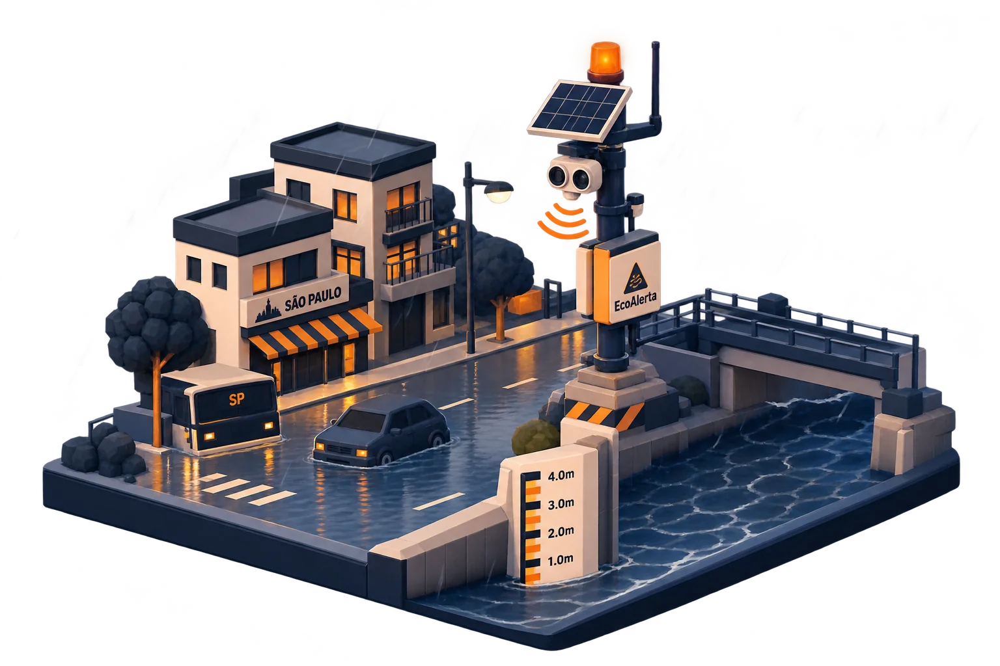
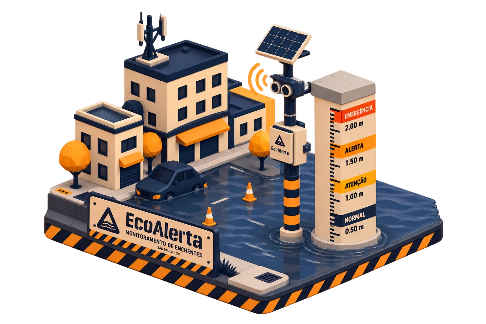

EcoAlerta
Monitoramento do nível da água e alertas em áreas de risco.
Não podemos impedir a chuva. Podemos ajudar a cidade a se preparar.
Leitura simulada para demonstração.

Monitoramento
Dados de demonstração. Integração real com os sensores na fase final do projeto.
Problema

Enchentes e alagamentos tomam as ruas de São Paulo a cada chuva forte.
Falta comunicação rápida entre Defesa Civil e moradores de áreas de risco.
Tecnologia
Arduino e sensor de nível de água monitoram os pontos de risco.
Python classifica o perigo e a página web informa a população.
-
01
Monitorar
Sensor acompanha o nível da água.
-
02
Identificar
Limites definidos classificam a situação.
-
03
Alertar
LEDs e buzzer sinalizam o risco no local.
-
04
Informar
Esta página apresenta os dados à cidade.
Objetivos
Monitorar o nível da água e classificar em Normal, Atenção, Alerta ou Emergência.
Avisar os moradores com antecedência para reduzir riscos e perdas.
Público-alvo
-
EA-P01
Moradores de áreas de risco
Recebem alertas e sabem quando agir.
-
EA-P02
Motoristas e motociclistas
Evitam ruas alagadas e pontos de alagamento.
-
EA-P03
Pedestres e entregadores
Encontram rotas seguras no dia a dia.
Benefícios
-
EA-B01

Tempo para evacuar
Alertas chegam antes da água subir.
-
EA-B02

Rotas seguras
Moradores e motoristas evitam pontos alagados.
-
EA-B03
Apoio à Defesa Civil
Dados locais reforçam a resposta oficial.
-
EA-B04
ODS 11 e ODS 13
Cidades sustentáveis e ação climática.